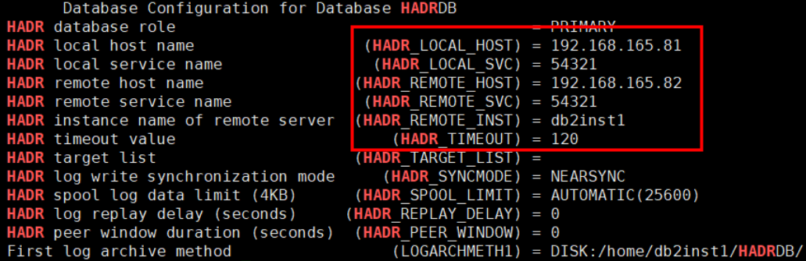

当要保护的数据库为集群部署时，请参考本节注册DB2数据库集群。
操作步骤
- 在DB2页面选择“集群”页签。
- 单击“注册”。
- 在“注册”页面，自定义集群名称并选择类型和集群节点。
- 相关参数说明如表1。
表1 注册集群参数说明 参数
说明
名称
自定义集群名称。
类型
集群类型可选择Database Partitioning Feature、PowerHA、HADR和RHEL HA类型。说明：对于1.6.0及后续版本支持RHEL HA集群。
判断集群类型方式如下：- HADR集群
- 使用PuTTY登录DB2数据库所在主机。
- 执行以下命令切换至DB2数据库用户，以用户名db2inst1为例。
su - db2inst1
- 执行以下命令判断是否为HADR集群，以数据库名HADRDB为例。
db2 get db cfg for HADRDB | grep -i 'HADR'
其回显如下所示，右边列显示HADR的配置参数，表示该集群类型是HADR。

- 执行以下命令查看HADR集群的状态，以数据库名HADRDB为例。
db2pd -db HADRDB -hadr
- 其回显如下所示为HADR集群主节点。

- 其回显如下所示为HADR集群的备节点。

- 其回显如下所示为HADR集群主节点。
- Database Partitioning Feature集群
- 使用PuTTY登录DB2数据库所在主机。
- 执行以下命令切换至DB2数据库用户，以用户名db2inst1为例。
su - db2inst1
- 执行以下命令判断是否为Database Partitioning Feature集群。
$ db2 get db cfg for 数据库名称 | grep -i 'partition'
其回显如下所示，显示Database Partitioning Feature表示该集群类型是Database Partitioning Feature。Catalog database partition number (CATALOGPARTITION) = 0 Partitioning strategy (DATABASEPARTITIONINGSTRATEGY) = Database Partitioning Feature
- PowerHA集群
- 使用PuTTY登录DB2数据库所在主机。
- 执行以下命令查询是否为AIX操作系统。
uname -s
若回显为AIX，则继续执行3，若回显不是AIX，则表示该集群类型不是PowerHA。
- 执行以下命令判断是否为PowerHA集群。
lssrc -g cluster
回显如下所示，clstrmgrES、clconfd是PowerHA集群子系统，表示该集群类型是PowerHA。

- RHEL HA集群
- 使用PuTTY登录DB2数据库所在主机。
- 执行以下命令判断是否为RHEL HA集群。
pcs cluster status
回显如下所示，表示该集群类型是RHEL HA。

节点
DB2实例所在的主机。
- HADR集群
- 单击“确定”。